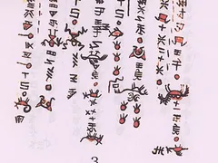
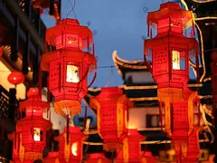
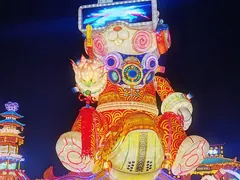
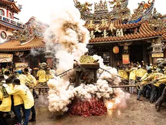
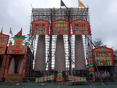
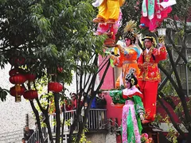

非遗图鉴 / 岁时节令
10
非遗图鉴 · 民俗
岁时节令
民俗 · 183 项、492 子项 · 第 2 / 4 页（Ⅹ-61 至 Ⅹ-120）
每一条只列名录上的事实：编号、名称、申报地区或单位、公布年份和批次。详情看中国非物质文化遗产网的官方页。在名录检索里查这一门类 →
- Ⅹ-61
壮族铜鼓习俗
- 广西壮族自治区河池市2006 第一批 · 新增项目官方页 →
- Ⅹ-62
楹联习俗
- 中国楹联学会2006 第一批 · 新增项目官方页 →
- Ⅹ-63
苏州甪直水乡妇女服饰
- 江苏省苏州市2006 第一批 · 新增项目官方页 →
- Ⅹ-64
惠安女服饰
- 福建省惠安县2006 第一批 · 新增项目官方页 →
- Ⅹ-65
苗族服饰
- 苗族服饰（昌宁苗族服饰）云南省保山市2006 第一批 · 新增项目官方页 →
- 湖南省湘西土家族苗族自治州2008 第二批 · 扩展项目官方页 →
- 贵州省桐梓县2008 第二批 · 扩展项目官方页 →
- 贵州省安顺市西秀区2008 第二批 · 扩展项目官方页 →
- 贵州省关岭布依族苗族自治县2008 第二批 · 扩展项目官方页 →
- 贵州省纳雍县2008 第二批 · 扩展项目官方页 →
- 贵州省剑河县2008 第二批 · 扩展项目官方页 →
- 贵州省台江县2008 第二批 · 扩展项目官方页 →
- 贵州省榕江县2008 第二批 · 扩展项目官方页 →
- 贵州省六盘水市六枝特区2008 第二批 · 扩展项目官方页 →
- 贵州省丹寨县2008 第二批 · 扩展项目官方页 →
- Ⅹ-66
回族服饰
- 宁夏回族自治区2006 第一批 · 新增项目官方页 →
- Ⅹ-67
- Ⅹ-68
农历二十四节气
- 中国农业博物馆2006 第一批 · 新增项目官方页 →
- 农历二十四节气（九华立春祭）浙江省衢州市柯城区2011 第三批 · 扩展项目官方页 →
- 农历二十四节气（班春劝农）浙江省遂昌县2011 第三批 · 扩展项目官方页 →
- 农历二十四节气（石阡说春）贵州省石阡县2011 第三批 · 扩展项目官方页 →
- 农历二十四节气（三门祭冬）浙江省三门县2014 第四批 · 扩展项目官方页 →
- 农历二十四节气（安仁赶分社）湖南省安仁县2014 第四批 · 扩展项目官方页 →
- 农历二十四节气（苗族赶秋）湖南省花垣县2014 第四批 · 扩展项目官方页 →
- 农历二十四节气（壮族霜降节）广西壮族自治区天等县2014 第四批 · 扩展项目官方页 →
- 农历二十四节气（半山立夏习俗）浙江省杭州市拱墅区2021 第五批 · 扩展项目官方页 →
- 农历二十四节气（送大暑船）浙江省台州市椒江区2021 第五批 · 扩展项目官方页 →
- 农历二十四节气（梅源芒种开犁节）浙江省丽水市云和县2021 第五批 · 扩展项目官方页 →
- 农历二十四节气（内乡打春牛习俗）河南省南阳市内乡县2021 第五批 · 扩展项目官方页 →
- Ⅹ-69
女书习俗
- 湖南省江永县2006 第一批 · 新增项目官方页 →
- Ⅹ-70
水书习俗
- 贵州省黔南布依族苗族自治州2006 第一批 · 新增项目官方页 →

六甲反书 第三页 水族文字（水书）样品图：未知Unknown author / Public domain / 维基共享资源。本站已缩放裁切。 - Ⅹ-71
元宵节
- 文化部2008 第二批 · 新增项目官方页 →
- 元宵节（敛巧饭习俗）北京市怀柔区2008 第二批 · 新增项目官方页 →
- 元宵节（九曲黄河阵灯俗）北京市密云县2008 第二批 · 新增项目官方页 →
- 元宵节（柳林盘子会）山西省柳林县2008 第二批 · 新增项目官方页 →
- 元宵节（蔚县拜灯山习俗）河北省蔚县2008 第二批 · 新增项目官方页 →
- 元宵节（马尾-马祖元宵节俗）福建省福州市马尾区2008 第二批 · 新增项目官方页 →
- 元宵节（泉州闹元宵习俗）福建省泉州市2008 第二批 · 新增项目官方页 →
- 元宵节（闽台东石灯俗）福建省晋江市2008 第二批 · 新增项目官方页 →
- 元宵节（枫亭元宵游灯习俗）福建省仙游县2008 第二批 · 新增项目官方页 →
- 元宵节（闽西客家元宵节庆）福建省连城县2008 第二批 · 新增项目官方页 →
- 元宵节（永昌县卍字灯俗）甘肃省永昌县2008 第二批 · 新增项目官方页 →
- 元宵节（九曲黄河灯俗）青海省乐都县2008 第二批 · 新增项目官方页 →
- 元宵节（豫园灯会）上海市黄浦区2011 第三批 · 扩展项目官方页 →
- 元宵节（上坂关公灯）江西省南昌市湾里区2011 第三批 · 扩展项目官方页 →
- 元宵节（千军台庄户幡会）北京市门头沟区2014 第四批 · 扩展项目官方页 →
- 元宵节（抡花）河北省滦平县2014 第四批 · 扩展项目官方页 →
- 元宵节（河上龙灯胜会）浙江省杭州市萧山区2014 第四批 · 扩展项目官方页 →
- 元宵节（前童元宵行会）浙江省宁海县2014 第四批 · 扩展项目官方页 →
- 元宵节（淄博花灯会）山东省淄博市张店区2014 第四批 · 扩展项目官方页 →
- 元宵节（彬县灯山会）陕西省彬县2014 第四批 · 扩展项目官方页 →
- 元宵节（辽西朱碌科黄河阵）辽宁省朝阳市2021 第五批 · 扩展项目官方页 →
- 元宵节（瑷珲上元节）黑龙江省黑河市爱辉区2021 第五批 · 扩展项目官方页 →
- 元宵节（赣南客家唱船习俗）江西省赣州市南康区2021 第五批 · 扩展项目官方页 →
- 元宵节（百节龙习俗）湖北省鄂州市2021 第五批 · 扩展项目官方页 →
- 元宵节（德江炸龙习俗）贵州省铜仁市德江县2021 第五批 · 扩展项目官方页 →
- 元宵节（苗族舞龙嘘花习俗）贵州省黔东南苗族侗族自治州台江县2021 第五批 · 扩展项目官方页 →
- 元宵节（东山转灯）甘肃省甘南藏族自治州舟曲县2021 第五批 · 扩展项目官方页 →

Lantern of Yuyuan Shopping Center, Shanghai, China.图：d. FUKA from Yokohama, Japan / CC BY-SA 2.0 / 维基共享资源。本站已缩放裁切，按 CC BY-SA 2.0 同样许可共享。 - Ⅹ-72
- Ⅹ-73
畲族三月三
- 浙江省景宁畲族自治县2008 第二批 · 新增项目官方页 →
- Ⅹ-74
宾阳炮龙节
- 广西壮族自治区宾阳县2008 第二批 · 新增项目官方页 →
- Ⅹ-75
苗族独木龙舟节
- 贵州省台江县2008 第二批 · 新增项目官方页 →
- Ⅹ-76
苗族跳花节
- 贵州省安顺市2008 第二批 · 新增项目官方页 →
- Ⅹ-77
- Ⅹ-78
德昂族浇花节
- 云南省德宏傣族景颇族自治州2008 第二批 · 新增项目官方页 →
- Ⅹ-79
江孜达玛节
- 西藏自治区江孜县2008 第二批 · 新增项目官方页 →
- Ⅹ-80
- Ⅹ-81
灯会
- 灯会（苇子灯阵）河北省邯郸市2008 第二批 · 新增项目官方页 →
- 灯会（胜芳灯会）河北省霸州市2008 第二批 · 新增项目官方页 →
- 灯会（河曲河灯会）山西省河曲县2008 第二批 · 新增项目官方页 →
- 灯会（肥东洋蛇灯）安徽省肥东县2008 第二批 · 新增项目官方页 →
- 灯会（南安英都拔拔灯）福建省南安市2008 第二批 · 新增项目官方页 →
- 灯会（石城灯会）江西省石城县2008 第二批 · 新增项目官方页 →
- 灯会（渔灯节）山东省烟台市2008 第二批 · 新增项目官方页 →
- 灯会（泮村灯会）广东省开平市2008 第二批 · 新增项目官方页 →
- 灯会（自贡灯会）四川省自贡市2008 第二批 · 新增项目官方页 →
- 灯会（潜江灯会）湖北省潜江市2021 第五批 · 扩展项目官方页 →

第29届自贡国际恐龙灯会灯组——千灯萌兔图：PermanentM / CC BY-SA 4.0 / 维基共享资源。本站已缩放裁切，按 CC BY-SA 4.0 同样许可共享。 - Ⅹ-82
- Ⅹ-83
- Ⅹ-84
庙会
- 庙会（妙峰山庙会）北京市门头沟区2008 第二批 · 新增项目官方页 →
- 庙会（东岳庙庙会）北京市朝阳区2008 第二批 · 新增项目官方页 →
- 庙会（晋祠庙会）山西省太原市晋源区2008 第二批 · 新增项目官方页 →
- 庙会（上海龙华庙会）上海市徐汇区2008 第二批 · 新增项目官方页 →
- 庙会（赶茶场）浙江省磐安县2008 第二批 · 新增项目官方页 →
- 庙会（泰山东岳庙会）山东省泰安市2008 第二批 · 新增项目官方页 →
- 庙会（武当山庙会）湖北省十堰市2008 第二批 · 新增项目官方页 →
- 庙会（火宫殿庙会）湖南省长沙市2008 第二批 · 新增项目官方页 →
- 庙会（佛山祖庙庙会）广东省佛山市2008 第二批 · 新增项目官方页 →
- 庙会（药王山庙会）陕西省铜川市2008 第二批 · 新增项目官方页 →
- 庙会（北山庙会）吉林省吉林市2011 第三批 · 扩展项目官方页 →
- 庙会（张山寨七七会）浙江省缙云县2011 第三批 · 扩展项目官方页 →
- 庙会（方岩庙会）浙江省永康市2011 第三批 · 扩展项目官方页 →
- 庙会（九华山庙会）安徽省池州市九华山风景区2011 第三批 · 扩展项目官方页 →
- 庙会（西山万寿宫庙会）江西省新建县2011 第三批 · 扩展项目官方页 →
- 庙会（汉阳归元庙会）湖北省武汉市汉阳区2011 第三批 · 扩展项目官方页 →
- 庙会（当阳关陵庙会）湖北省当阳市2011 第三批 · 扩展项目官方页 →
- 庙会（蒲县朝山会）山西省蒲县2014 第四批 · 扩展项目官方页 →
- 庙会（泰伯庙会）江苏省无锡市2014 第四批 · 扩展项目官方页 →
- 庙会（苏州轧神仙庙会）江苏省苏州市姑苏区2014 第四批 · 扩展项目官方页 →
- 庙会（金村庙会）江苏省张家港市2014 第四批 · 扩展项目官方页 →
- 庙会（浚县正月古庙会）河南省浚县2014 第四批 · 扩展项目官方页 →
- 庙会（宝顶架香庙会）重庆市大足区2014 第四批 · 扩展项目官方页 →
- 庙会（丰都庙会）重庆市丰都县2014 第四批 · 扩展项目官方页 →
- 庙会（丫髻山庙会）北京市平谷区2021 第五批 · 扩展项目官方页 →
- 庙会（天成观庙会）辽宁省朝阳市2021 第五批 · 扩展项目官方页 →
- 庙会（圣堂庙会）江苏省苏州市相城区2021 第五批 · 扩展项目官方页 →
- 庙会（绍兴舜王庙会）浙江省绍兴市2021 第五批 · 扩展项目官方页 →
- 庙会（商丘火神台庙会）河南省商丘市睢阳区2021 第五批 · 扩展项目官方页 →
- 庙会（南岳庙会）湖南省衡阳市南岳区2021 第五批 · 扩展项目官方页 →
- 庙会（茶园游会）广东省东莞市2021 第五批 · 扩展项目官方页 →
- 庙会（贵德六月庙会）青海省海南藏族自治州贵德县2021 第五批 · 扩展项目官方页 →

中国台湾嘉义县新港乡奉天宫（原图说明：Fongtien Temple in Singang Township）图：Celineliu119 / CC BY-SA 4.0 / 维基共享资源。本站已缩放裁切，按 CC BY-SA 4.0 同样许可共享。 - Ⅹ-85
民间信俗
- 民间信俗（千童信子节）河北省盐山县2008 第二批 · 新增项目官方页 →
- 民间信俗（关公信俗）山西省运城市2008 第二批 · 新增项目官方页 →
- 民间信俗（关公信俗）河南省洛阳市2008 第二批 · 新增项目官方页 →
- 民间信俗（石浦-富岗如意信俗）浙江省象山县2008 第二批 · 新增项目官方页 →
- 民间信俗（汤和信俗）浙江省温州市龙湾区2008 第二批 · 新增项目官方页 →
- 民间信俗（保生大帝信俗）福建省厦门市海沧区2008 第二批 · 新增项目官方页 →
- 民间信俗（保生大帝信俗）福建省龙海市2008 第二批 · 新增项目官方页 →
- 民间信俗（陈靖姑信俗）福建省古田县2008 第二批 · 新增项目官方页 →
- 民间信俗（陈靖姑信俗）福建省福州市仓山区2008 第二批 · 新增项目官方页 →
- 民间信俗（西王母信俗）甘肃省泾川县2008 第二批 · 新增项目官方页 →
- 民间信俗（梅日更召信俗）内蒙古自治区包头市九原区2011 第三批 · 扩展项目官方页 →
- 民间信俗（锡伯族喜利妈妈信俗）辽宁省沈阳市2011 第三批 · 扩展项目官方页 →
- 民间信俗（闽台送王船）福建省厦门市2011 第三批 · 扩展项目官方页 →
- 民间信俗（清水祖师信俗）福建省安溪县2011 第三批 · 扩展项目官方页 →
- 民间信俗（嫘祖信俗）湖北省远安县2011 第三批 · 扩展项目官方页 →
- 民间信俗（波罗诞）广东省广州市黄埔区2011 第三批 · 扩展项目官方页 →
- 民间信俗（悦城龙母诞）广东省德庆县2011 第三批 · 扩展项目官方页 →
- 民间信俗（长洲太平清醮）香港特别行政区2011 第三批 · 扩展项目官方页 →
- 民间信俗（鱼行醉龙节）澳门特别行政区2011 第三批 · 扩展项目官方页 →
- 民间信俗（孝子祭）浙江省富阳市2014 第四批 · 扩展项目官方页 →
- 民间信俗（潮神祭祀）浙江省海宁市2014 第四批 · 扩展项目官方页 →
- 民间信俗（三平祖师信俗）福建省平和县2014 第四批 · 扩展项目官方页 →
- 民间信俗（东镇沂山祭仪）山东省临朐县2014 第四批 · 扩展项目官方页 →
- 民间信俗（贵屿双忠信俗）广东省汕头市潮阳区2014 第四批 · 扩展项目官方页 →
- 民间信俗（冼夫人信俗）广东省茂名市2014 第四批 · 扩展项目官方页 →
- 民间信俗（冼夫人信俗）海南省海口市2014 第四批 · 扩展项目官方页 →
- 民间信俗（冼夫人信俗）海南省定安县2014 第四批 · 扩展项目官方页 →
- 民间信俗（冼夫人信俗）海南省澄迈县2014 第四批 · 扩展项目官方页 →
- 民间信俗（钦州跳岭头）广西壮族自治区钦州市2014 第四批 · 扩展项目官方页 →
- 民间信俗（康定转山会）四川省康定县2014 第四批 · 扩展项目官方页 →
- 民间信俗（梅里神山祭祀）云南省德钦县2014 第四批 · 扩展项目官方页 →
- 民间信俗（女子太阳山祭祀）云南省西畴县2014 第四批 · 扩展项目官方页 →
- 民间信俗（屯堡抬亭子）贵州省安顺市西秀区2014 第四批 · 扩展项目官方页 →
- 民间信俗（迎城隍）陕西省西安市2014 第四批 · 扩展项目官方页 →
- 民间信俗（岷县青苗会）甘肃省岷县2014 第四批 · 扩展项目官方页 →
- 民间信俗（同心莲花山青苗水会）宁夏回族自治区同心县2014 第四批 · 扩展项目官方页 →
- 民间信俗（黄大仙信俗）香港特别行政区2014 第四批 · 扩展项目官方页 →
- 民间信俗（澳门哪吒信俗）澳门特别行政区2014 第四批 · 扩展项目官方页 →
- 民间信俗（巴音居日合乌拉祭）内蒙古自治区兴安盟科尔沁右翼前旗2021 第五批 · 扩展项目官方页 →
- 民间信俗（六十棵榆树祭）内蒙古自治区鄂尔多斯市鄂托克前旗2021 第五批 · 扩展项目官方页 →
- 民间信俗（小白龙信俗）上海市金山区2021 第五批 · 扩展项目官方页 →
- 民间信俗（延平郡王信俗）福建省厦门市思明区2021 第五批 · 扩展项目官方页 →
- 民间信俗（澳门土地信俗）澳门特别行政区2021 第五批 · 扩展项目官方页 →

長洲太平清醮又稱包山節图：Chong Fat / CC BY-SA 3.0 / 维基共享资源。本站已缩放裁切，按 CC BY-SA 3.0 同样许可共享。 - Ⅹ-86
青海湖祭海
- 青海省海北藏族自治州2008 第二批 · 新增项目官方页 →
- Ⅹ-87
抬阁（芯子、铁枝、飘色）
- 抬阁（芯子、铁枝、飘色）（葛渔城重阁会）河北省廊坊市2008 第二批 · 新增项目官方页 →
- 抬阁（芯子、铁枝、飘色）（宽城背杆）河北省宽城满族自治县2008 第二批 · 新增项目官方页 →
- 抬阁（芯子、铁枝、飘色）（隆尧县泽畔抬阁）河北省隆尧县2008 第二批 · 新增项目官方页 →
- 抬阁（芯子、铁枝、飘色）（清徐徐沟背铁棍）山西省清徐县2008 第二批 · 新增项目官方页 →
- 抬阁（芯子、铁枝、飘色）（万荣抬阁）山西省万荣县2008 第二批 · 新增项目官方页 →
- 抬阁（芯子、铁枝、飘色）（峨口挠阁）山西省代县2008 第二批 · 新增项目官方页 →
- 抬阁（芯子、铁枝、飘色）（脑阁）内蒙古自治区土默特左旗2008 第二批 · 新增项目官方页 →
- 抬阁（芯子、铁枝、飘色）（金坛抬阁）江苏省金坛市2008 第二批 · 新增项目官方页 →
- 抬阁（芯子、铁枝、飘色）（浦江迎会）浙江省浦江县2008 第二批 · 新增项目官方页 →
- 抬阁（芯子、铁枝、飘色）（肘阁抬阁）安徽省寿县2008 第二批 · 新增项目官方页 →
- 抬阁（芯子、铁枝、飘色）（肘阁抬阁）安徽省临泉县2008 第二批 · 新增项目官方页 →
- 抬阁（芯子、铁枝、飘色）（大坝高装）四川省兴文县2008 第二批 · 新增项目官方页 →
- 抬阁（芯子、铁枝、飘色）（青林口高抬戏）四川省江油市2008 第二批 · 新增项目官方页 →
- 抬阁（芯子、铁枝、飘色）（庄浪县高抬）甘肃省庄浪县2008 第二批 · 新增项目官方页 →
- 抬阁（芯子、铁枝、飘色）（阁子里芯子）山东省淄博市临淄区2008 第二批 · 新增项目官方页 →
- 抬阁（芯子、铁枝、飘色）（周村芯子）山东省淄博市周村区2008 第二批 · 新增项目官方页 →
- 抬阁（芯子、铁枝、飘色）（章丘芯子）山东省章丘市2008 第二批 · 新增项目官方页 →
- 抬阁（芯子、铁枝、飘色）（霍童铁枝）福建省宁德市蕉城区2008 第二批 · 新增项目官方页 →
- 抬阁（芯子、铁枝、飘色）（福鼎沙埕铁枝）福建省福鼎市2008 第二批 · 新增项目官方页 →
- 抬阁（芯子、铁枝、飘色）（屏南双溪铁枝）福建省屏南县2008 第二批 · 新增项目官方页 →
- 抬阁（芯子、铁枝、飘色）（南朗崖口飘色）广东省中山市2008 第二批 · 新增项目官方页 →
- 抬阁（芯子、铁枝、飘色）（台山浮石飘色）广东省台山市2008 第二批 · 新增项目官方页 →
- 抬阁（芯子、铁枝、飘色）（湟中县千户营高台）青海省湟中县2008 第二批 · 新增项目官方页 →
- 抬阁（芯子、铁枝、飘色）（吴川飘色）广东省吴川市2008 第二批 · 新增项目官方页 →
- 抬阁（芯子、铁枝、飘色）（隆德县高台）宁夏回族自治区隆德县2008 第二批 · 新增项目官方页 →
- 抬阁（芯子、铁枝、飘色）（河田高景）广东省陆河县2008 第二批 · 新增项目官方页 →
- 抬阁（海沧蜈蚣阁）福建省厦门市海沧区2011 第三批 · 扩展项目官方页 →
- 抬阁（宜章夜故事）湖南省宜章县2011 第三批 · 扩展项目官方页 →
- 抬阁（长乐抬阁故事会）湖南省汨罗市2011 第三批 · 扩展项目官方页 →
- 抬阁（通海高台）云南省通海县2011 第三批 · 扩展项目官方页 →
- 抬阁（珠梅抬故事）湖南省涟源市2014 第四批 · 扩展项目官方页 →
- 抬阁（渼陂彩擎）江西省吉安市青原区2021 第五批 · 扩展项目官方页 →

Done on the first day of the Roman Calendar Year.Piao Se is a parade of children masquer…图：jun j / CC BY 2.0 / 维基共享资源。本站已缩放裁切。 - Ⅹ-88
Iron flower in the Millennium City Park图：Yumeto / CC BY-SA 4.0 / 维基共享资源。本站已缩放裁切，按 CC BY-SA 4.0 同样许可共享。 - Ⅹ-89
- Ⅹ-90
祭祖习俗
- 祭祖习俗（大槐树祭祖习俗）山西省洪洞县2008 第二批 · 新增项目官方页 →
- 祭祖习俗（沁水柳氏清明祭祖）山西省沁水县2011 第三批 · 扩展项目官方页 →
- 祭祖习俗（太公祭）浙江省文成县2011 第三批 · 扩展项目官方页 →
- 祭祖习俗（石壁客家祭祖习俗）福建省宁化县2011 第三批 · 扩展项目官方页 →
- 祭祖习俗（灯杆彩凤习俗）广东省揭东县2011 第三批 · 扩展项目官方页 →
- 祭祖习俗（下沙祭祖）广东省深圳市福田区2011 第三批 · 扩展项目官方页 →
- 祭祖习俗（徽州祠祭）安徽省祁门县2014 第四批 · 扩展项目官方页 →
- 祭祖习俗（诸葛后裔祭祖）浙江省兰溪市2014 第四批 · 扩展项目官方页 →
- 祭祖习俗（凉山彝族尼木措毕祭祀）四川省美姑县2014 第四批 · 扩展项目官方页 →
- 祭祖习俗（徐村司马迁祭祀）陕西省韩城市2014 第四批 · 扩展项目官方页 →
- Ⅹ-91
鄂温克驯鹿习俗
- 内蒙古自治区根河市2008 第二批 · 新增项目官方页 →
- Ⅹ-92
蒙古族养驼习俗
- 内蒙古自治区阿拉善盟2008 第二批 · 新增项目官方页 →
- Ⅹ-93
长白山采参习俗
- 吉林省抚松县2008 第二批 · 新增项目官方页 →
- Ⅹ-94
查干淖尔冬捕习俗
- 吉林省前郭尔罗斯蒙古族自治县2008 第二批 · 新增项目官方页 →
- Ⅹ-95
- Ⅹ-96
洪洞走亲习俗
- 山西省洪洞县2008 第二批 · 新增项目官方页 →
- Ⅹ-97
蟳埔女习俗
- 福建省泉州市丰泽区2008 第二批 · 新增项目官方页 →
- Ⅹ-98
- Ⅹ-99
朝鲜族传统婚礼
- 吉林省延边朝鲜族自治州2008 第二批 · 新增项目官方页 →
- Ⅹ-100
塔吉克族婚俗
- 新疆维吾尔自治区塔什库尔干塔吉克自治县2008 第二批 · 新增项目官方页 →
- Ⅹ-101
水乡社戏
- 浙江省绍兴市2008 第二批 · 新增项目官方页 →
- Ⅹ-102
界首书会
- 安徽省界首市2008 第二批 · 新增项目官方页 →
- Ⅹ-103
洛阳牡丹花会
- 河南省洛阳市2008 第二批 · 新增项目官方页 →
- Ⅹ-104
三汇彩亭会
- 四川省渠县2008 第二批 · 新增项目官方页 →
- Ⅹ-105
石宝山歌会
- 云南省剑川县2008 第二批 · 新增项目官方页 →
- Ⅹ-106
大理三月街
- 云南省大理市2008 第二批 · 新增项目官方页 →
- Ⅹ-107
- Ⅹ-108
- Ⅹ-109
朝鲜族服饰
- 吉林省延边朝鲜族自治州2008 第二批 · 新增项目官方页 →
- Ⅹ-110
畲族服饰
- 福建省罗源县2008 第二批 · 新增项目官方页 →
- Ⅹ-111
- Ⅹ-112
- Ⅹ-113
- Ⅹ-114
裕固族服饰
- 甘肃省肃南裕固族自治县2008 第二批 · 新增项目官方页 →
- Ⅹ-115
土族服饰
- 青海省互助土族自治县2008 第二批 · 新增项目官方页 →
- Ⅹ-116
撒拉族服饰
- 青海省循化撒拉族自治县2008 第二批 · 新增项目官方页 →
- Ⅹ-117
维吾尔族服饰
- 新疆维吾尔自治区于田县2008 第二批 · 新增项目官方页 →
- Ⅹ-118
哈萨克族服饰
- 新疆维吾尔自治区伊犁哈萨克自治州2008 第二批 · 新增项目官方页 →
- Ⅹ-119
- Ⅹ-120